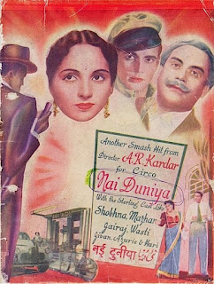
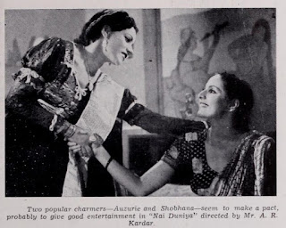

हिन्दी फिल्मों के सबसे सफल और सबसे मधुर संगीत देने वाले संगीतकारों में से एक नौशाद साहब के बारे में बहुत लिखा-पढ़ा-सुना जा चुका; लेकिन उनके शुरुआती संगीतबद्ध गीतों में से बहुत से अब भी उनके चाहकों के लिए अनसुने होंगे।इस श्रेणी का एक मस्तीभरा गीत सुनिए। यह गीत कोरस गीत है इसलिए इसे किस गायक ने गाया है इसकी जानकारी नहीं मिलती।
इस गीत में कलाकार भाभीजी के आने की खुशी में झूमते हुए पेठा- पतीसा-मखाने-जलेबियाँ मिलने की उम्मीद कर रहे हैं।
आईये सुनते हैं।
यह गीत फिल्म नई दुनिया 1942 का है और इसी फिल्म से हिन्दी फिल्म जगत को (बेबी) सुरैया जैसी गायिका मिली जो बाद में बड़ी अभिनेत्री-गायिका बनीं। सुरैया ने इसमें पह्ली बार "बूट करूँ में पालिश ओ बाबूजी" गीत गाया। हालांकि इसी वर्ष (1942) की एक और फिल्म ’शारदा"; नई दुनिया से पहले रिलीज हुई थी इसलिए कई फिल्म इतिहासकार शारदा के गीत "पंछी जा पीछे रहा बचपन मेरा" को पहला गीत मानते हैं।बोलो छूम छ न न न न न छई - 2
छ छ छई छ छ छई छ छ छई- 2
छई
हमें भाभी जी आ को मिल गई छ छ छई-2
बोलो छूम छ न न न न न छई -2
अब आएगी रोज़ मिठाई रे सजनवा
आएगी रोज़ मिठाई
हम खाएँगे प्रेम से भाई -2
कहो मैंने ये कैसी बात कही-2
ओ बोलो
छूम छ न न न न न छई -2
छई
हमें भाभी जी आ को मिल गई छ छ छई
बोलो छूम छ न न न न न छई
भाभी अपनी छे सुंदर नारी जी वाह वाह
अपनी छे सुंदर नारी
तेरी सूरत छे घणी प्यारी -2
त त थई त त थई त त त त त त थई -2
बोलो छूम छ न न न न न छई
छ छ छई छ छ छई छ छ छई- छई


हमें भाभी जी आ को मिल गई छ छ छईबोलो छूम छ न न न न न छई
जब पेठा पतीसे आएंगा
ओ डीयर जब पेठा पतीसे आएंगा
वैल हम भी तो खूब खाएंगा- 2
हा ह ह हा ह ह ह ह ह हई -2
बोलो छूम छ न न न न न छई
छ छ छई छ छ छई छ छ छई- छई
हमें भाभी जी आ को मिल गई छ छ छई
बोलो छूम छ न न न न न छई
गरमा गरम जलेबियाँ मखाने नि जे बिंदिए
गरम जलेबियाँ मखाने
असी खवांगे हूण रब्ब जाने -2
अग्गे मिल्दी सी सानु रोटी बई -2
बोलो छूम छ न न न न न छई
छ छ छई छ छ छई छ छ छई-छई
हमें भाभी जी आ को मिल गई छ छ छई
बोलो छूम छ न न न न न छई
आ भाई अच्छा अच्छा है ये मेरा बाणी बखाना
भाई अच्छा अच्छा है ये मेरा बाणी
भाभी मिला है अति लासानी -2
पुईओ पुईओ , खाना पुईओ
खाना पुईओ, खाना पुई
पुईओ पुईओ, खाना पुईओ
खाना पुईओ, खाना पुई
बोलो छूम छ न न न न न छई
छ छ छई छ छ छई छ छ छई-छई
हमें भाभी जी आ को मिल गई छ छ छई -2
बोलो छूम छ न न न न न छई-2
फोटो एवं पोस्टर मूवीज गूगल से साभार